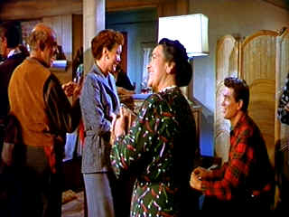

| All
That Heaven Allows/C,C+ |
| Criterion/1955/89/ANA 1.77 |
One day widow Cary Scott notices Ron Kirby snipping at her bushes. Cary makes
moon eyes at the gardener and invites him to share some coffee. You'd never guess while Ron sits
with a tree up his bottom and Cary plants niceties that these two people will find a common ground
for sex. Beneath the staid exterior of the New England town a smutty undercrust fermented on
hypocritical social mores rules the day.
Plot and execution are very dated. The town gossip is more suited to a
comedy than a romantic soap. The attitude of Cary's children, at least as expressed in the film, is
close to ridiculous. The daughter spouts social mantra like a broken teapot pours tea. The son
should have been thrown out of the house before the action began. Cary's best friend is a
reasonable creation. The liveliest scenes take place with Ron's circle of friends. They are a
charming mix of big city refugees, hard working immigrants and backwoods mainstays.
 |
| Rock serenades his lady. ©Universal |
There's a scene in Ron Kirby's newly transformed old mill home that look like
it was created by a window dresser for Macy's. Big flakes are flowing outside the huge paned
picture window and frost has formed perfectly surrounding the perimeter's of each section. It looks
like Kirby must have gotten a trendy New York decorator to pull his house in order. The guy will
resort to anything to convince matronly Cary Scott to slip into the marriage bed. Rock Hudson gives
Ron Kirby the big tree school of acting treatment. It's pretty tough for him to make a convincing
case for wooing Wyman's Cary Scott, so why not tantalize her with tales of tall white tipped
trees.
Rock Hudson playing Ron Kirby tries hard enough to put the moves on Jane
Wyman as Cary. The big question, unanswered by the film, is why? There's little screen
chemistry between them.
Director Douglas Sirk helms in high style, creating picture postcard scenes
between the teardrops and snow flakes. The script leaves little room for audience concern for the
characters.
The original elements appear somewhat less vibrant than an early fall New
England landscape. There's a slight tinge of brown mixed in with the overall color. Color pulsing
at scene transitions and some misregistration, especially in the country club sequence. There are
minor intrusions of source dirt and a few scenes are less than perfectly sharp. Contrast is fine
with plenty of overall light output. Shadow detail is in good balance. The mono sound is clean.
Criterion gives All That Heaven Allows a special edition treatment including an
hour of filmed excerpts from a 1979 BBC documentary featuring lots of interview footage with
director Sirk. An written essay by filmmaker Rainer Werner Fassbinder is presented with still
photos. There's also a step-through presentation of promotional materials and still photos and the
theatrical trailer.
|
|
|
|

The
Movie Poster Archive includes extensive poster images from the films of stars like Susan Hayward,
Kirk Douglas, Katharine Hepburn and many more. Our featured star is Lana Turner.

Selections from the Feature Archive
include articles on Akira Kurosawa, Frank
Darabont, Blonde Bimbos, Hollywood Street Gangs, or Vietnam: The
Hollywood Pariah, and many more....
.jpg)
Screen Voices and style of delivery often stamp an actor's screen
image indelibly. Click the lips to read more.

 Have you visited Home Theater
Talk lately? One of the friendliest places on the Net for Home Theater and DVD discussion, you
can get help for installation problems or simply share your opinions with other Vidiots. Have you visited Home Theater
Talk lately? One of the friendliest places on the Net for Home Theater and DVD discussion, you
can get help for installation problems or simply share your opinions with other Vidiots.

ISF Monitor Calibrations in the
Tristate New York area. Lots of hardware info and frequent hardware peaks from video expert Kevin
Miller.They may be judgmental, but that's the point, isn't it. Lots of DVD reviews plus news and
more.

A love of movies drives this small DVD production
company, Synapse Films. Currently
specializing in horror and cult films. Watch for new DVD releases of film festival independents as
Synapse branches out.

Home Vision Cinema
Classic and foreign motion pictures on VHS tape. The title
selection is excellent and informative essays are provided for many of the films.

The DVD Forum is an international association of hardware
manufacturers, software firms and other users of Digital Versatile Discs (the "DVD
Format"), created for the purpose of exchanging and disseminating ideas and information about
the DVD Format and its technical capabilities, improvements and innovations.

The National Film Preservation Foundation (NFPF) is the nonprofit organization created by the U.S. Congress to save
America's film heritage.
|